Chapter 14: Trees
This chapter covers trees and induction on trees.
14.1 Why trees?
Trees are the central structure for storing and organizing data in computer science. Examples of trees include
- Trees which show the organization of real-world data: family/geneaology trees, taxonomies (e.g. animal subspecies, species, genera, families)
- Data structures for efficiently storing and retrieving data. The basic idea is the same one we saw for binary search within an array: sort the data, so that you can repeatedly cut your search area in half.
- Parse trees, which show the structure of a piece of (for example) computer program, so that the compiler can correctly produce the corresponding machine code.
- Decision trees, which classify data by asking a series of questions. Each tree node contains a question, whose answer directs you to one of the node's children.
For example, here's a parse tree for the arithmetic expression
$a * c + b * d$.
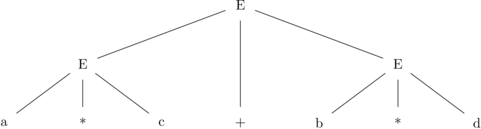
Computer programs that try to understand natural language
use parse trees to represent the structure of sentences.
For example, here are two possible structures for
the phrase ``green eggs and ham.'' In the first, but
not the second, the ham would be green.
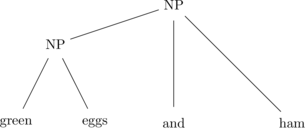
Here's a decision tree for figuring out what kind of animal is raiding
your backyard trashcan.
Decision trees are often
used for engineering classification problems for which precise
numerical models do not exist, such as transcribing speech waveforms
into the basic sounds of a natural language.
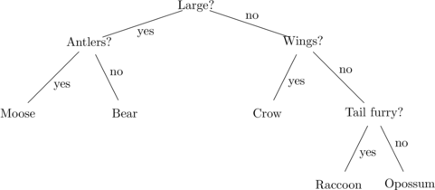
And here is a tree storing the set of numbers $\{-2,8,10,32,47,108,200,327,400\}$
14.2 Defining trees
Formally, a tree is a undirected graph with a special node called the root, in which every node is connected to the root by exactly one path. When a pair of nodes are neighbors in the graph, the node nearest the root is called the parent and the other node is its child. By convention, trees are drawn with the root at the top. Two children of the same parent are known as siblings.
To keep things simple, we will assume that the set of nodes in a tree is finite. We will also assume that each set of siblings is ordered from left to right, because this is common in computer science applications.
A leaf node is a node that has no children. A node that does have children is known as an internal node . The root is an internal node, except in the special case of a tree that consists of just one node (and no edges).
The nodes of a tree can be organized into levels, based on how many edges away from the root they are. The root is defined to be level 0. Its children are level 1. Their children are level 2, and so forth. The height of a tree is the maximum level of any of its nodes or, equivalently, the maximum level of any of its leaves or, equivalently, the maximum length of a path from the root to a leaf.
If you can get from $x$ to $g$ by following zero or more parent links, then $g$ is an ancestor of $x$ and $x$ is a descendent of$g$. So $x$ is an ancestor/descendent of itself. The ancestors/descendents of $x$ other than $x$ itself are its proper ancestors/descendents. If you pick some random node $a$ in a tree $T$, the subtree rooted at $a$ consists of $a$ (its root), all of $a$'s descendents, and all the edges linking these nodes.
14.3 m-ary trees
Many applications restrict how many children each node can have. A binary tree (very common!) allows each node to have at most two children. An m-ary tree allows each node to have up to $m$ children. Trees with ``fat'' nodes with a large bound on the number of children (e.g. 16) occur in some storage applications.
Important special cases involve trees that are nicely filled out in some sense. In a full m-ary tree, each node has either zero or m children. Never an intermediate number. So in a full 3-ary tree, nodes can have zero or three children, but not one child or two children.
A full and complete m-ary tree is full and all leaves are at the same height. This means that the whole bottom level is fully populated with leaves.
For restricted types of trees like this, there are strong relationships between the numbers of different types of notes. for example:
Claim: A full m-ary tree with $i$ internal nodes has $mi + 1$ nodes total.
To see why this is true, notice that there are two types of nodes: nodes with a parent and nodes without a parent. A tree has exactly one node with no parent. We can count the nodes with a parent by taking the number of parents in the tree ($i$) and multiplying by the branching factor $m$.
Therefore, the number of leaves in a full m-ary tree with $i$ internal nodes is $(mi + 1) - i = (m-1)i + 1$.
14.4 Height vs number of nodes
Suppose that we have a binary tree of height $h$. How many nodes and how many leaves does it contain? This clearly can't be an exact formula, since some trees are more bushy than others. But we can give useful upper and lower bounds.
To minimize the node counts, consider a tree of height $h$ that has just one leaf. It contains $h+1$ nodes connected into a straight line by $h$ edges. So the minimum number of leaves is 1 (regardless of $h$) and the minimum number of nodes is $h+1$.
The node counts are maximized by a tree which is full and complete. For these trees, the number of leaves is $2^h$. More generally, the number of nodes at level $L$ is $2^L$. So the total number of nodes $n$ is $\sum_{L=0}^h 2^L$. The closed form for this summation is $2^{h+1} -1$. So, for full and complete binary trees, the height is proportional to $\log_2{n}$.
Balanced binary trees are binary trees in which all leaves are at approximately the same height. The exact definition of ``approximately'' depends on the specific algorithms used to keep the tree balanced. (See textbooks on data structures and algorithms for further information.) Balanced trees are more flexible than full and complete binary trees, but they also have height proportional to $\log_2{n}$, where $n$ is the number of nodes. This means that data stored in a balanced binary tree can be accessed and modified in $\log_2{n}$ time.
14.5 Context-free grammars
Applications involving languages, both human languages and computer languages, frequently involve parse trees that show the structure of a sequence of terminal symbols . A terminal symbol might be a word or a character, depending on the application. The terminal symbols are stored in the leaf nodes of the parse tree. The non-leaf nodes contains symbols that help indicate the structure of the sentence.
For example, the following tree shows one structure for the code string
$a*c+b*d$. This structure assumes you intend the multiplication
to be done first, before the addition, i.e.
$(a*c)+(b*d)$. The tree uses eight symbols:
$E$, $V$, $a$, $b$, $c$, $d$, $+$, $*$.
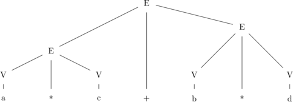
This sort of labelled tree can be conveniently specified by a context-free grammar. A context-free grammar is a set of rules which specify what sorts of children are possible for a parent node with each type of label. The lefthand side of each rule gives the symbol on the parent node and the righthand side shows one possible pattern for the symbols on its children. If all the nodes of a tree $T$ have children matching the rules of some grammar $G$, we say that the tree $T$ and the terminal sequence stored in its leaves are generated by $G$.
For example, the following grammar contains two rules for an $E$ node. The first rule allows an $E$ node to have three children, the leftmost and rightmost ones labelled $E$ and the middle one labelled $+$. According to these rules, a node labelled $V$ can only have one child, labelled either $a$, $b$, $c$, or $d$. The tree shown above follows these grammar rules. \begin{eqnarray*} E &\rightarrow& E + E \\ E &\rightarrow& V * V \\ V &\rightarrow& a \\ V &\rightarrow& b \\ V &\rightarrow& c \\ V &\rightarrow& d \\ \end{eqnarray*}
If a grammar contains several patterns for the children of a certain node label, we can pack them onto one line using a vertical bar to separate the options. E.g. we can write this grammar more compactly as \begin{eqnarray*} E &\rightarrow& E + E \mid V + V \\ V &\rightarrow& a \mid b \mid c \mid d \end{eqnarray*}
To be completely precise about which trees are allowed by a grammar, we must specify two details beyond the set of grammar rules. First, we must give the set of terminals, i.e. symbols that are allowed to appear on the leaf nodes. Second, we must state which symbols, called start symbols, are allowed to appear on the root node. For example, for the above grammar, we might stipulate that the terminals are $a$, $b$, $c$, $d$, $+$, and $*$ and that the start symbols are $E$ and $V$. Symbols that can appear on the lefthand side of rules are often written in capital letters.
Consider the following grammar, with start symbol $S$ and terminals $a$, $b$, and $c$. \begin{eqnarray*} S &\rightarrow& a S b \\ S &\rightarrow& c \\ \end{eqnarray*}
Here are four trees matching this grammar, with sequences of
terminals c, acb, aacbb, aaacbbb. The
sequences from this grammar always have a $c$ in the middle,
with some number of $a$'s before it and the same number of
$b$'s after it.
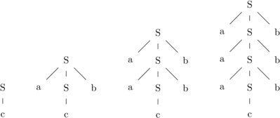
Notice that the left-to-right order of nodes in the tree must
match the order in the grammar rules. So, for example, the
following tree doesn't match the above grammar.
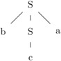
Notice also that we didn't allow $S$ to be a terminal.
If we added $S$ to the set of terminals, our grammar
would also allow the following trees:
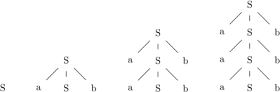
Sometimes it is helpful to use relatively few symbols, so as to concentrate on the possible shapes for the parse tree. Consider, for example, noun compounds such as ``dump truck driver'' or ``wood salad tongs''. Rather than getting into the specifics of the words involved, we might represent each noun with the symbol $N$. A noun compound structure can look like any binary tree, so it would have the following grammar, where $N$ is both a start and a terminal symbol \begin{eqnarray*} N &\rightarrow& N \mid N N\\ \end{eqnarray*}
Figure 9 shows six trees generated by these rules.
The bottom left tree shows the structure for
``dump truck driver'' and the bottom middle
the structure of ``wood salad tongs''.
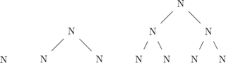 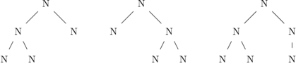
In some applications, it's convenient to have a branch of the parse tree which generates nothing in the terminal sequence. This is done by having a rule whose righthand side is $\epsilon$, the standard symbol for an empty string. For example, here is a grossly-oversimplified grammar of an English sentence, with start symbol $S$ and terminals: coyotes, rabbits, carrots, eat, kill, wash, the, all, some, and $\epsilon$. \begin{eqnarray*} S &\rightarrow& NP\ \ VP \\ VP &\rightarrow & V \ \ NP \ \mid \ V\ \ NP\ \ NP\\ NP &\rightarrow& Det \ \ N \\ N &\rightarrow& coyotes \mid rabbits \mid carrots \\ V &\rightarrow& eat \mid kill \mid wash \\ Det &\rightarrow& \epsilon \mid the \mid all \mid some\\ \end{eqnarray*}
This will generate terminal sequences such as
``All coyotes eat some rabbits.'' Every noun phrase (NP)
is required to have a determiner (Det), but this
determiner can expand into a word that's invisible
in the terminal sequence. So we can also
generate sequences like ``Coyotes eat carrots.''
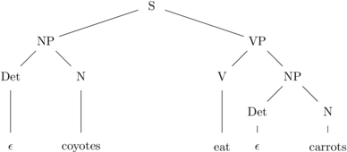
Unless the grammar can generate an entire output containing no characters, it is possible to revise this grammar so that it generates this sentence without using $\epsilon$. However, some theories of the meaning of natural language sentences make a distinction between items which are completely missing and items which are present in the underlying structure but missing in the superficial structure. In this case, one might claim that the above sentence has a determiner which is understood to be ``all.''
14.6 Recursion trees
One nice application for trees is visualizing the behavior of certain recursive definitions, especially those used to describe algorithm behavior. For example, consider the following definition, where $c$ is some constant. \begin{eqnarray*} S(1) &=& c \\ S(n) &=& 2S(n/2) + n, \ \ \ \ \forall n \ge 2\ \ \text{($n$ a power of 2)} \end{eqnarray*}
We can draw a picture of this definition using
a ``recursion tree''. The top node in the tree represents $S(n)$
and contains everything in the formula for $S(n)$ except
the recursive calls to $S$. The two nodes below it represent
two copies of the computation of $S(n/2)$. Again, the value in
each node contains the non-recursive part of the formula for computing
$S(n/2)$. The value of $S(n)$ is then the sum of the values in all
the nodes in the recursion tree.
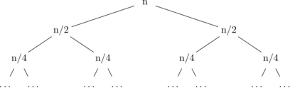
To sum everything in the tree, we need to ask:
- How high is this tree, i.e. how many levels do we need to expand before we hit the base case $n=1$?
- For each level of the tree, what is the sum of the values in all nodes at that level?
- How many leaf nodes are there?
In this example, the tree has height $\log n$, i.e. there are $\log n$ non-leaf levels. At each level of the tree, the node values sum to $n$. So the sum for all non-leaf nodes is $n \log n$. There are $n$ leaf nodes, each of which contributes $c$ to the sum. So the sum of everything in the tree is $n \log n + cn$, which is the same closed form we found for this recursive definition in the Recursive Definition chapter.
Recursion trees are particularly handy when you only need an approximate description of the closed form, e.g. is its leading term quadratic or cubic?
14.7 Another recursion tree example
Now, let's suppose that we have the following definition,
where $c$ is some constant.
\begin{eqnarray*}
P(1) &=& c \\
P(n) &=& 2P(n/2) + n^2,\ \ \ \ \ \forall n \ge 2\ \ \text{($n$ a power of 2)}
\end{eqnarray*}
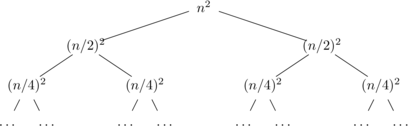
The height of the tree is again $\log n$. The sums of all nodes at the top level is $n^2$. The next level down sums to $n^2/2$. And then we have sums: $n^2/4$, $n^2/8$, $n^2/16$, and so forth. So the sum of all nodes at level $k$ is $n^2 \frac{1}{2^k}$.
The lowest non-leaf nodes are at level $\log n - 1$. So the sum of all the non-leaf nodes in the tree is \begin{eqnarray*} P(n) &=& \sum_{k = 0}^{\log n-1} n^2 \frac{1}{2^k} = n^2 \sum_{k = 0}^{\log n-1} \frac{1}{2^k} \\ &=& n^2 (2 - \frac{1}{2^{\log n -1}}) = n^2 (2 - \frac{2}{2^{\log n}}) = n^2 (2 - \frac{2}{n}) = 2n^2 - 2n \end{eqnarray*}
Adding $cn$ to cover the leaf nodes, our final closed form is $2n^2 + (c-2)n$.
14.8 Tree induction
When doing induction on trees, we divide the tree up at the top. That is, we view a tree as consisting of a root node plus some number of subtrees rooted at its children. The induction variable is typically the height of the tree. The child subtrees have height less than that of the parent tree. So, in the inductive step, we'll be assuming that the claim is true for these shorter child subtrees and showing that it's true for the taller tree that contains them.
For example, we claimed above that
Claim: Let $T$ be a binary tree, with height $h$ and $n$ nodes. Then $n \le 2^{h+1} -1$.
Proof by induction on $h$, where $h$ is the height of the tree.Base: The base case is a tree consisting of a single node with no edges. It has $h = 0$ and $n= 1$. Then we work out that $2^{h+1} -1 = 2^1 -1 = 1 = n$.
Induction: Suppose that the claim is true for all binary trees of height $< h$. Let $T$ be a binary tree of height $h$ ($h > 0$).
Case 1: $T$ consists of a root plus one subtree $X$. $X$ has height $h-1$. So $X$ contains at most $2^h -1$ nodes. $T$ only contains one more node (its root), so this means $T$ contains at most $2^h$ nodes, which is less than $2^{h+1} -1$.
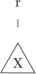
Case 2: $T$ consists of a root plus two subtrees $X$ and $Y$. $X$ and $Y$ have heights $p$ and $q$, both of which have to be less than $h$, i.e. $\le h-1$. $X$ contains at most $2^{p+1} -1$ nodes and $Y$ contains at most $2^{q+1} -1$ nodes, by the inductive hypothesis. But, since $p$ and $q$ are less than $h$, this means that $X$ and $Y$ each contain $\le 2^h - 1$ nodes.
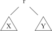
So the total number of nodes in $T$ is the number of nodes in $X$ plus the number of nodes in $Y$ plus one (the new root node). This is $ \le 1 + (2^p - 1) + (2^q - 1) \le 1 + 2(2^h - 1) = 1 + 2^{h+1} - 2 = 2^{h+1} -1$
So the total number of nodes in $T$ is $ \le 2^{h+1} -1$, which is what we needed to show. $\Box$
In writing such a proof, it's tempting to think that if the full tree has height $h$, the child subtrees must have height $h-1$. This is only true if the tree is complete. For a tree that isn't necessarily complete, one of the subtrees must have height $h-1$ but the other subtree(s) might be shorter than $h-1$. So, for induction on trees, it is almost always necessary to use a strong inductive hypothesis.
In the inductive step, notice that we split up the big tree ($T$) at its root, producing two smaller subtrees ($X$) and ($Y$). Some students try to do induction on trees by grafting stuff onto the bottom of the tree. Do not do this. There are many claims, especially in later classes, for which this grafting approach will not work and it is essential to divide at the root.
14.9 Heap example
In practical applications, the nodes of a tree are often used to
store data. Algorithm designers often need to prove claims about how this
data is arranged in the tree.
For example,
suppose we store numbers in the nodes of a full binary tree.
The numbers obey the heap property if, for every node $X$ in the tree,
the value in $X$ is at least as big as the value in each of $X$'s
children. For example:
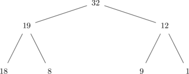
Notice that the values at one level aren't uniformly bigger than the values at the next lower level. For example, 18 in the bottom level is larger than 12 on the middle level. But values never decrease as you move along a path from a leaf up to the root.
Trees with the heap property are convenient for applications where you have to maintain a list of people or tasks with associated priorities. It's easy to retrieve the person or task with top priority: it lives in the root. And it's easy to restore the heap property if you add or remove a person or task.
I claim that:
Claim: If a tree has the heap property, then the value in the root of the tree is at least as large as the value in any node of the tree.
To keep the proof simple, let's restrict our attention to full binary trees:
Claim: If a full binary tree has the heap property, then the value in the root of the tree is at least as large as the value in any node of the tree.
Let's let $v(a)$ be the value at node $a$ and let's use the recursive structure of trees to do our proof.
Proof by induction on the tree height $h$.Base: $h=0$. A tree of height zero contains only one node, so obviously the largest value in the tree lives in the root!
Induction: Suppose that the claim is true for all full binary trees of height $< h$. Let $T$ be a tree of height $h$ ($h > 0$) which has the heap property. Since $T$ is a full binary tree, its root $r$ has two children $p$ and $q$. Suppose that $X$ is the subtree rooted at $p$ and $Y$ is the subtree rooted at $q$.
Both $X$ and $Y$ have height $< h$. Moreover, notice that $X$ and $Y$ must have the heap property, because they are subtrees of $T$ and the heap property is a purely local constraint on node values.
Suppose that $x$ is any node of $T$. We need to show that $v(r) \ge v(x)$. There are three cases:
Case 1: $x = r$. This is obvious.
Case 2: $x$ is any node in the subtree $X$. Since $X$ has the heap property and height $\le h$, $v(p) \ge v(x)$ by the inductive hypothesis. But we know that $v(r) \ge v(p)$ because $T$ has the heap property. So $v(r) \ge v(x)$.
Case 3: $x$ is any node in the subtree $Y$. Similar to case 2.
So, for any node $x$ in $T$, $v(r) \ge v(x)$.$\Box$
14.10 Proof using grammar trees
Consider the following grammar $G$, with start symbol $S$ and terminals $a$ and $b$. I claim that all trees generated by $G$ have the same number of nodes with label $a$ as with label $b$. \begin{eqnarray*} S &\rightarrow& ab \\ S &\rightarrow& SS \\ S &\rightarrow& aSb \\ \end{eqnarray*}
We can prove this by induction as follows:
Proof by induction on the tree height $h$.Base: Notice that trees from this grammar always have height at least 1. The only way to produce a tree of height 1 is from the first rule, which generates exactly one $a$ node and one $b$ node.
Induction: Suppose that the claim is true for all trees of height $< k$, where $k \ge 1$. Consider a tree $T$ of height $k$. The root must be labelled $S$ and the grammar rules give us three possibilities for what the root's children look like:
Case 1: The root's children are labelled $a$ and $b$. This is just the base case.
Case 2: The root's children are both labelled $S$. The subtrees rooted at these children have height $< k$. So, by the inductive hypothesis, each subtree has equal numbers of $a$ and $b$ nodes. Say that the left tree has $m$ of each type and the right tree has $n$ of each type. Then the whole tree has $m+n$ nodes of each type.
Case 3: The root has three children, labelled $a$, $S$, and $b$. Since the subtree rooted at the middle child has height $< k$, it has equal numbers of $a$ and $b$ nodes by the inductive hypothesis. Suppose it has $m$ nodes of each type. Then the whole tree has $m+1$ nodes of each type.
In all three cases, the whole tree $T$ has equal numbers of $a$ and $b$ nodes.
14.1 Variation in terminology
There are actually two sorts of trees in the mathematical world. This chapter describes the kind of trees most commonly used in computer science, which are formally ``rooted trees'' with a left-to-right order. In graph theory, the term ``tree'' typically refers to ``free trees,'' which are connected acyclic graphs with no distinguished root node and no clear up/down or left-right directions. We will see free trees later, when analyzing planar graphs. Variations on these two types of trees also occur. For example, some data structures applications use trees that are almost like ours, except that a single child node must be designated as a ``left'' or ``right'' child.
Infinite trees occur occasionally in computer science applications. They are an obvious generalization of the finite trees discussed here.
Tree terminology varies a lot, apparently because trees are used for a wide range of applications with very diverse needs. In particular, some authors use the term ``complete binary tree'' to refer to a tree in which only the leftmost part of the bottom level is filled in. The term ``perfect'' is then used for a tree whose bottom level is entirely filled. Some authors don't allow a node to be an ancestor or descendent of itself. A few authors don't consider the root node to be a leaf.
Many superficial details of context-free grammar notation change with the application. For example, the BNF notation used in programming language specifications looks different at first glance because, for example, the grammar symbols are whole words surrounded by angle brackets.
Conventional presentations of context-free grammars are restricted so that terminals can't occur on the lefthand side of rules and there is a single start symbol. The broader definitions here allow us to capture the full range of examples floating around practical applications, without changing what sets of terminal sequences can be generated by these grammars.